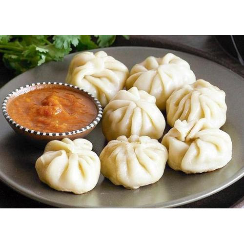

Momo Recipe
Ingredients

Ingredients
- 4 cups all-purpose flour
- 2 1/2 pounds ground chicken thighs
- 1 cup chopped fresh cilantro
- 1 cup chopped onions
- 4 tablespoons minced garlic
- 4 tablespoons minced peeled ginger
- 2 tablespoons ground cumin
- 1 teaspoon ground cinnamon
- Salt and black pepper
Directions:
- Mix together the flour and 1 1/2 cups room temperature water in a bowl.
- Knead the dough well until it is medium-firm and flexible.
- Cover and let rest for 1 hour.
- Meanwhile, mix together the chicken, cilantro, onions, garlic, ginger, cumin, cinnamon, 2 tablespoons salt and
1/2 teaspoon pepper in a bowl.
- To make the wrappers: Break off 1/2 ounce of dough and forming it into a ball.
- Place the ball on a flat surface and roll it into a 4-inch round with a rolling pin.
- Repeat with the remaining dough.
- Spray a steamer pan with cooking spray.
- Place a tablespoon of the chicken filling in the middle of a wrapper.
- Holding the wrapper in your left hand.
- Use your right thumb and index finger to start pinching the edges of the wrapper together.
- Pinch and fold until the edges of the circle close up like a little satchel.
- Place the momo in the prepared steamer pan.
- Repeat with remaining wrappers and filling.
- Fill the steamer pot halfway with water and bring to a boil.
- Set the steamer pan with the momos on top of the pot and cover with a tight lid.
- Steam the momos until cooked, 8 to 9 minutes.
Serve at once with salsa, or tomato sauce on the side.